uapmd-app UI Guide (AI slop)
NOTE: it is an AI-slop documentation where the screenshots are all taken at v0.5.6+. uapmd-app is a quickly moving target and the sshots will quickly get outdated. Please bear with that.
This is a screen-by-screen reference for uapmd-app, the
ImGui-based reference host that ships with UAPMD. It describes what each
control does and where to find it.
For the wider picture -- what UAPMD is, how to obtain audio plugins on each platform, and what source separation needs from you -- read USERS_GUIDE.md first. This document assumes you already have the app running.
Screenshots were taken on macOS with the dark theme. Layout is identical on the other desktop platforms; on Android, iOS and Web the same widgets are laid out for the available screen space.
- Starting the app
- The main window
- The toolbar
- The timeline
- Tracks
- Clips
- Clip editors
- Plugins
- Projects and rendering
- Settings
- Addins
- Automating the app
Starting the app
On desktop the executable takes a few optional arguments:
| Argument | Effect |
|---|---|
--scan-only |
Scan plugins and exit, without opening a window. |
--force-rescan (or --rescan) |
Discard the cached scan results and scan again. |
--full |
Perform full verification during the scan. Requires
--scan-only. |
--mcp-server [port] |
Start the MCP server on launch. Defaults to port 37373. |
--no-confirm-on-quit |
Skip the "you have unsaved changes" dialog when closing. |
A positional argument is treated as a project file to load.
The main window
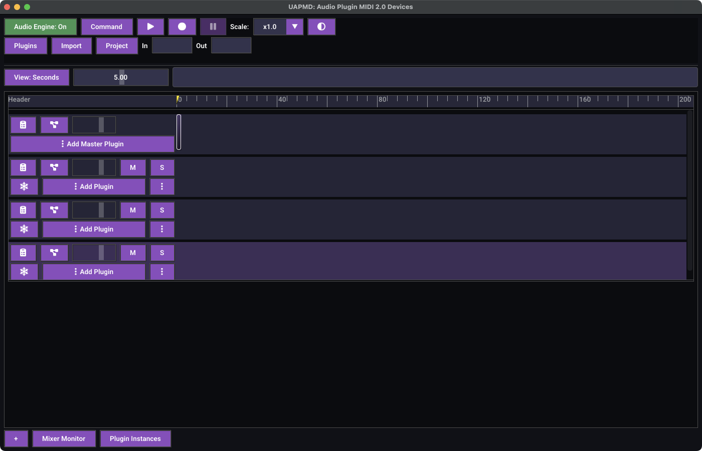
Everything lives in a single window with four bands, top to bottom:
- The toolbar -- engine power, transport, global commands, display scale, theme.
- The navigator row -- the time-unit switcher, the zoom slider, and the whole-song position controller.
- The track list -- the master track followed by your tracks, each with a legend on the left and its clips on the right.
- The footer -- add a track, and open the Mixer Monitor and Plugin Instances windows.
Auxiliary windows (Settings, Plugin Selector, editors, and so on) open as floating panels inside the main window. They can be moved and resized like ordinary windows, and their positions are remembered between runs.
At launch you get three empty tracks and an empty master track. Nothing is loaded and nothing is playing, but the audio engine is already running.
The toolbar
Audio Engine
The leftmost button reports and toggles the audio engine. It is green when on and red when off. Turning it off releases the audio device and disables the transport buttons; turning it back on re-activates the device and the plugins on it.
Command
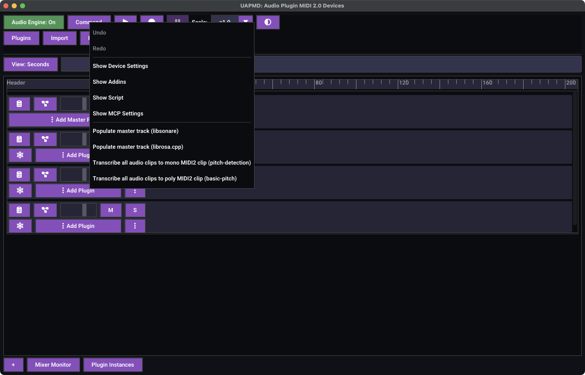
Command is the catch-all menu:
- Undo / Redo at the top, labelled with the operation
they will reverse (for example "Undo Add track"). They are greyed out
when there is nothing to undo, and a "History operation in progress..."
note appears while one is still running. The keyboard shortcuts work
anywhere outside a text field:
Ctrl+Z/Cmd+Zto undo,Ctrl+Shift+Z/Cmd+Shift+ZorCtrl+Yto redo. - Show / Hide Device Settings, Addins, Script, and MCP Settings -- toggles for the four floating panels described later in this document.
- Commands contributed by addins, below the separator. What appears here depends on which addins are enabled; in the screenshot above they are master-track population (libsonare and librosa.cpp) and audio-to-MIDI transcription (pitch-detection for monophonic, basic-pitch for polyphonic material).
Transport
Three buttons, all disabled while the audio engine is off:
| Button | Behaviour |
|---|---|
| Play / Stop | One button that shows a triangle when idle and a square while the transport is engaged. Stopping also cancels a paused state. |
| Record | Records into the currently selected MIDI clip. Select a clip on the timeline first, otherwise the button does nothing. It turns red while recording; press it again to stop. |
| Pause / Resume | Enabled only while the transport is engaged. Shows a pause glyph while playing and a play glyph while paused. |
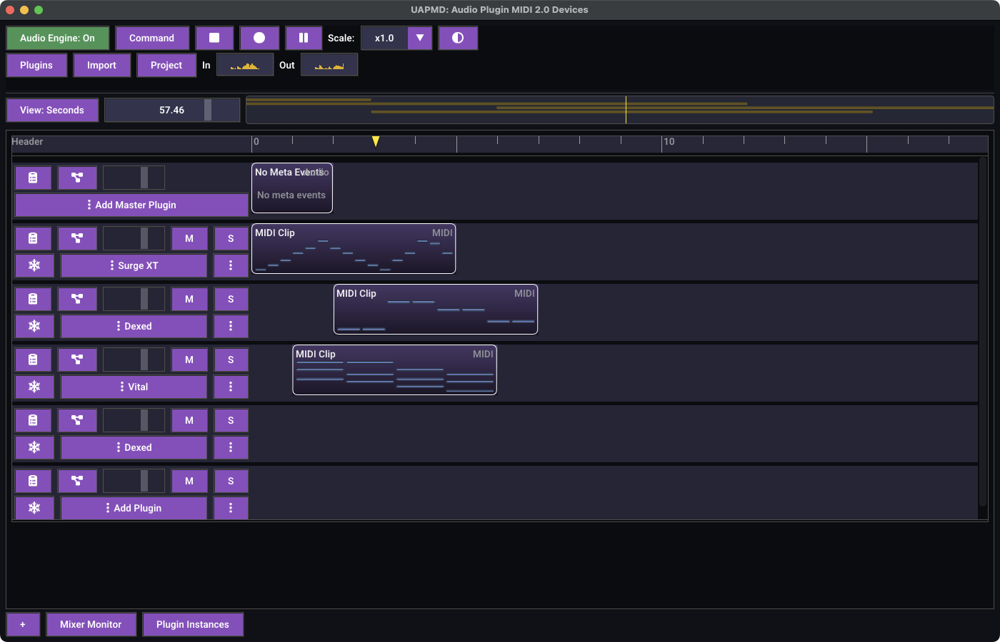
During playback the playhead marker moves along the ruler, a vertical line tracks it in the position controller, and the two spectrum analyzers at the right end of the toolbar show input and output activity.
Scale and theme
Scale: picks the UI scale factor -- x0.5,
x0.8, x1.0, x1.2,
x1.5, x2.0, x4.0. Changing it
rescales every widget and font, and resizes the window to match. The
button next to it (a half-filled circle) switches between the dark and
light themes.
Plugins, Import, Project
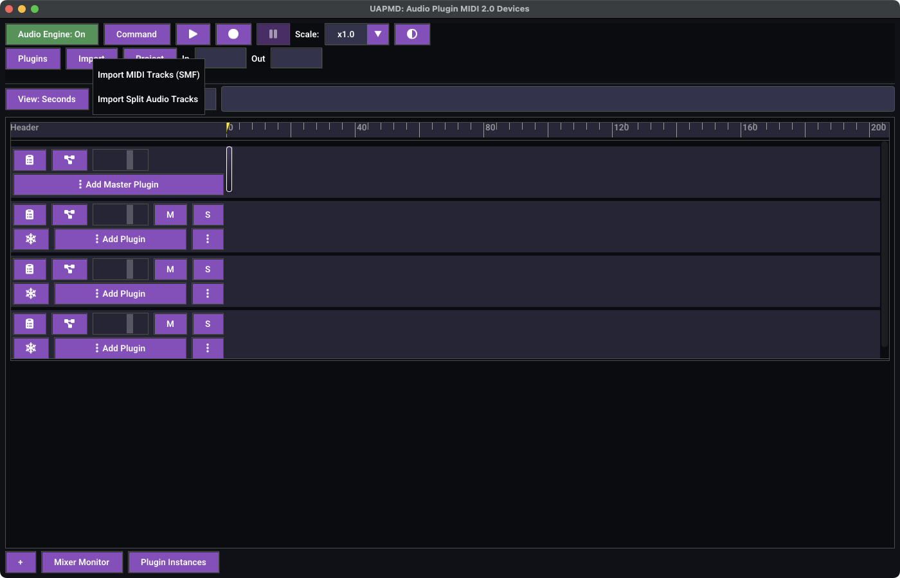
Plugins toggles the Plugin
Selector. Import offers:
- Import MIDI Tracks (SMF) -- pick a MIDI 1.0
.midfile; each of its tracks becomes a track holding a MIDI 2.0 clip. - Import Split Audio Tracks -- opens the split-audio import window. This item only appears while at least one stem separation addin is enabled.
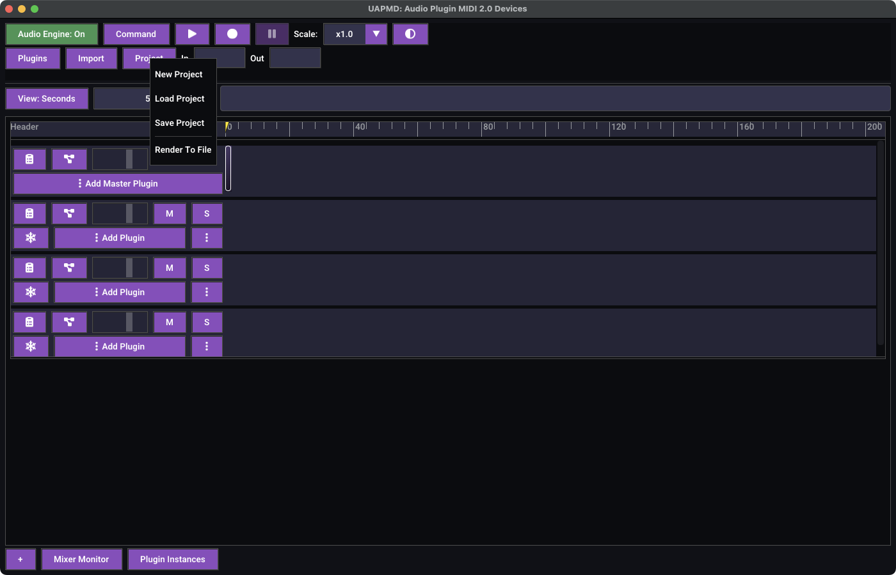
Project covers New Project,
Load Project, Save Project, and
Render To File.
Starting a new project or closing the app while there are unsaved
changes prompts you first, unless you launched with
--no-confirm-on-quit.
Spectrum analyzers
In and Out at the right end are live
spectrum displays of the audio input and the final output bus.
The timeline
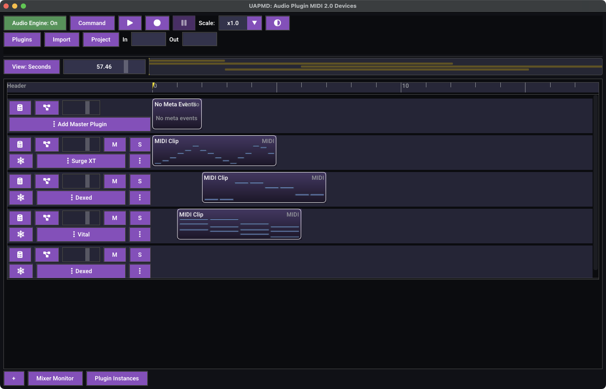
Time units
The View: Seconds / View: Beats button
switches the ruler and the clip positions between absolute time and
musical time. The two views are independent -- each keeps its own
zoom.
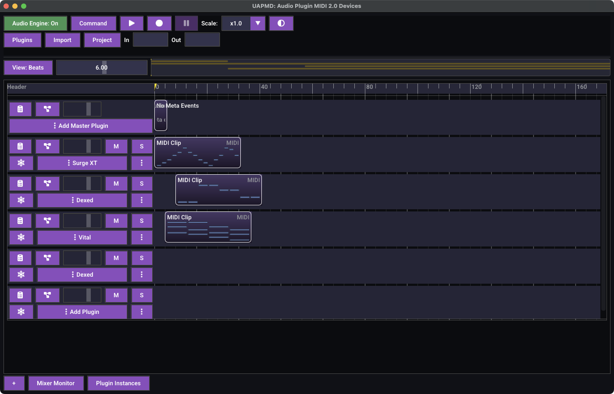
Zoom and position
The slider next to the view switcher is the timeline zoom, showing pixels per unit. It is logarithmic and spans four orders of magnitude, so small drags near the left end still move a useful amount.
The wide bar filling the rest of the row is the position controller. It shows the entire song: one lane per track, each clip a small bar, with a translucent rectangle marking the region currently visible below. Drag it to scroll the track list.
The master track
The first row is the master track. It carries the tempo and time-signature meta events that the beats view is built from, and it can host its own plugin chain via Add Master Plugin. It has a gain slider but no mute or solo.
The footer
+ adds an empty track. Mixer Monitor and
Plugin Instances open the two windows described below.
Tracks
A track owns an audio plugin graph and a set of clips. It is not "a plugin" -- a track typically holds one instrument plugin followed by zero or more effects, or, for audio material, just effects.
Each track legend has two rows of controls.
Row 1 -- clipboard icon, graph icon, gain slider,
M, S:
| Control | Behaviour |
|---|---|
| Clipboard icon | Opens the clip menu. |
| Graph icon | Shows or hides the track graph editor. |
| Gain slider | Track volume. Hovering shows the value in dB and as a linear factor;
at the bottom of its travel it reads Mute. |
M |
Mute. Turns red while the track is muted. |
S |
Solo. Turns amber while soloed.
Ctrl/Cmd-click to add a track to the current
solo set instead of replacing it. |
Row 2 -- snowflake icon, the plugin button,
⋮:
| Control | Behaviour |
|---|---|
| Snowflake icon | Track freezing. Off by default; clicking renders the track and freezes it. While rendering the icon becomes a spinner and clicking cancels; a queued freeze shows amber and a completed one blue. If a freeze fails, the tooltip carries the error and clicking turns the policy off. |
| Plugin button | Shows the name of the track's first plugin, or
Add Plugin when the track is empty. Opens the plugin menu. |
⋮ |
More track actions. |
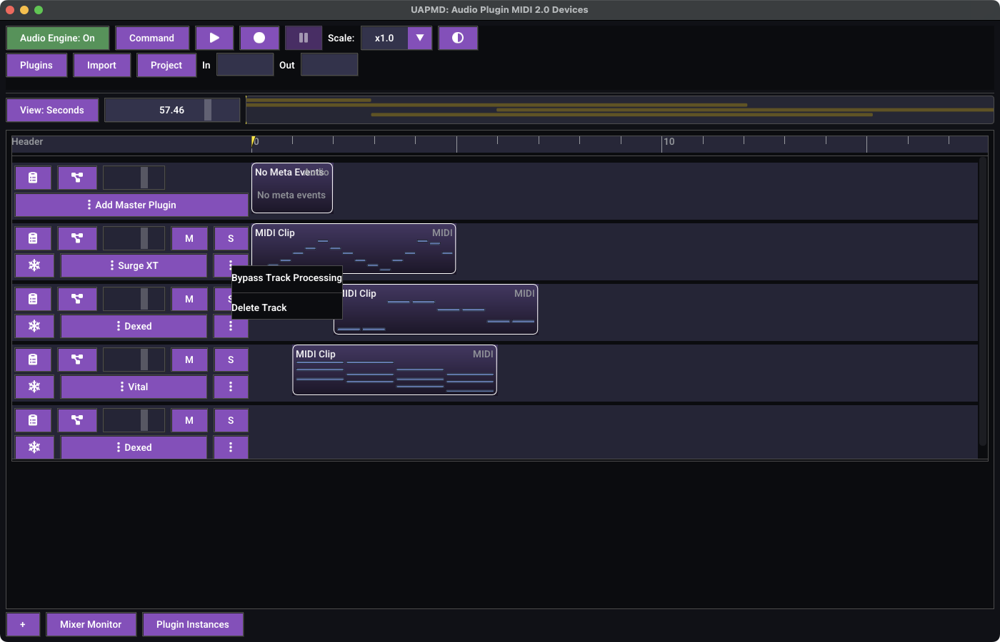
The ⋮ menu holds the two actions that are destructive or
easy to hit by accident: Bypass Track Processing (which
stops the track's plugins from processing while leaving them loaded) and
Delete Track.
Most of these controls are disabled while a track is busy -- for example while a freeze render is running.
Clips
A track can hold both audio and MIDI 2.0 clips at the same time. On playback both are fed into the track's graph, sliced per sample block. The usual reason to mix them is automation: an audio clip carrying the material, plus a MIDI 2.0 clip carrying Assignable Controllers that drive the effect plugins.
The clip menu
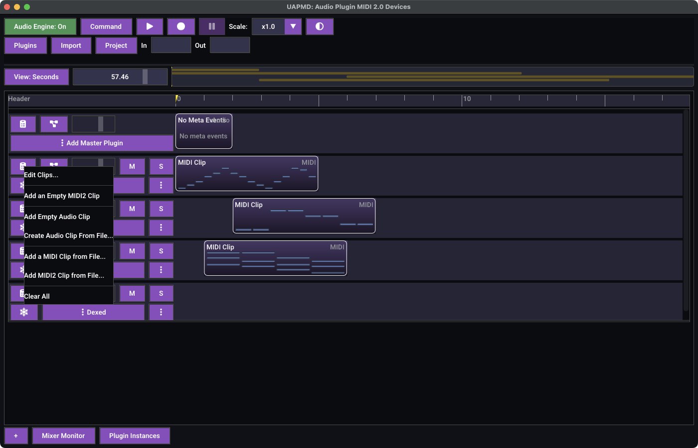
The clipboard icon in the track legend opens the clip menu, which applies to the track as a whole:
- Edit Clips... -- opens the per-track clip editor window.
- Add an Empty MIDI2 Clip / Add Empty Audio Clip.
- Create Audio Clip From File... --
.wav,.ogg,.flac. - Add a MIDI Clip from File... -- a MIDI 1.0
.midfile, translated to MIDI 2.0. - Add MIDI2 Clip from File... -- a MIDI 2.0 clip file
(
.midi2). - Clear All -- removes every clip on the track, after a confirmation.
The master track offers the same menu minus the audio-clip and
Clear All entries.
Selecting and editing clips
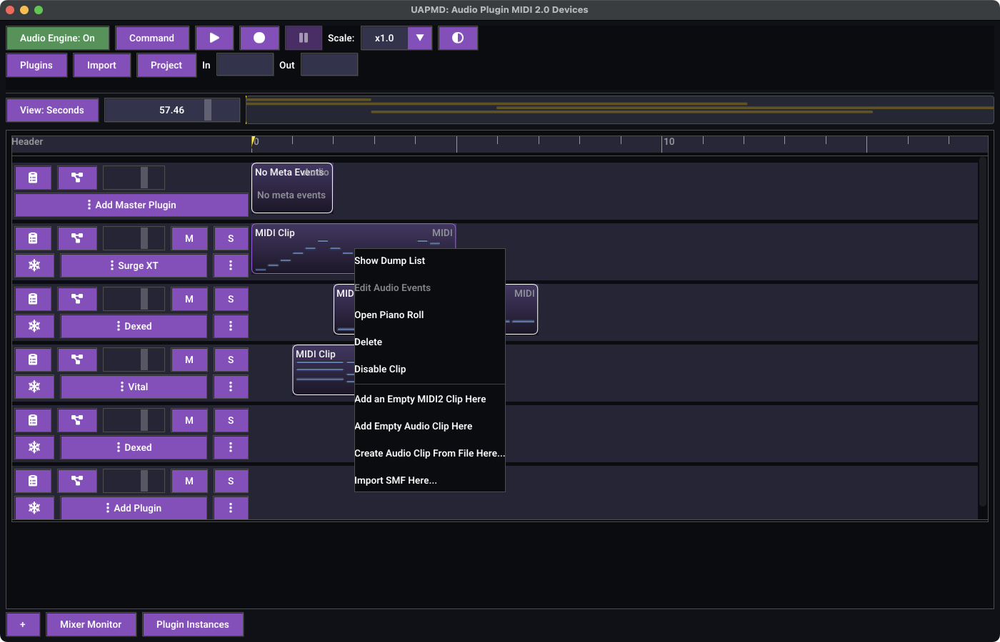
Drag across empty space in either timeline view to select the clips the rectangle crosses. A drag that crosses no clips is a range instead, and offers Add New MIDI Clip and Add Empty Audio Clip sized to the dragged span on release; in the beats view the range snaps to the nearest quarter-note beat. Alt-drag always takes the range reading and leaves the selection alone. Shift-click or Shift-drag adds to the selection; Ctrl-click (Cmd-click on macOS) toggles a clip. Click an unselected clip to select it alone. Click empty space, or press Escape while hovering the timeline, to clear selection. The track's Clips and More menus include Select All Clips.
Right-click, double-click, or press and hold a clip to open its context menu. Opening the menu on a selected clip keeps the other clips selected, so the commands below that act on the selection act on all of it. Press and hold is how touch devices reach these menus: hold for half a second without moving, and the press opens the menu instead of selecting:
- Show Dump List -- the MIDI event list editor.
- Edit Audio Events -- the audio marker and warp editor. Enabled for audio clips only.
- Open Piano Roll -- the piano roll editor.
- Cut, Copy, and Delete apply to all selected clips. Disable Clip applies to the clicked clip.
- Paste here inserts copied clips relative to the clicked track, preserving their track offsets. For multi-track copies, its submenu previews the source-to-destination track mapping, destination plugins, and clip counts. Choose Paste into these tracks to apply it.
- Paste to original tracks follows the original tracks by persistent identity, even if tracks have been reordered since copying. If an original track was deleted, nothing is pasted.
- Both paste modes start at the clicked time, preserve time spacing, and select the new clips. Destinations must exist and be visible. Pasted clips get fresh identities and absolute positions. Cut, paste, and group deletion each form one undo step.
- Add an Empty MIDI2 Clip Here, Add Empty Audio Clip Here, Create Audio Clip From File Here..., Import SMF Here... -- these use the timeline position you double-clicked as the new clip's start.
Right-clicking, double-clicking, or pressing and holding empty space also offers selection and clipboard commands. Paste from a track header's Clips or More menu uses the playhead position. The internal clip clipboard is cleared when the project is cleared.
Clip editors
The piano roll
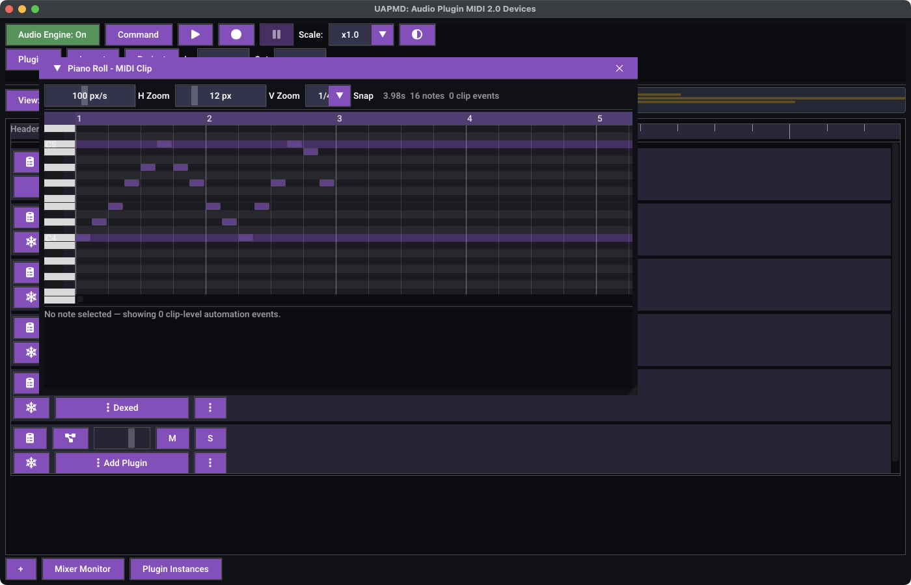
The piano roll edits the notes of a MIDI 2.0 clip. Its toolbar
carries H Zoom in pixels per second, V Zoom as
the height of one semitone row, and a Snap division. The
header also reports the clip length, the note count, and how many
clip-level events it holds.
Drag across empty grid space to select notes. Shift-click or Shift-drag adds notes; Ctrl-click (Cmd-click on macOS) toggles a note. Clicking an unselected note selects it alone. Click empty space or press Escape over the grid to clear selection. Selection highlights use the note rectangles, and selected notes remain selected when an edit changes their event order. Reloading changed clip content, including undo/redo, clears note selection; refreshing unchanged content preserves it.
Right-click or long-press a note or empty grid space for Cut, Copy, Paste here, Delete, and Select All Notes. Opening a menu on a selected note preserves the selection. The clipboard belongs to that open clip: it does not transfer notes between clips, and closing the piano-roll window discards it. Paste preserves pitches, durations, relative timing, MIDI group/channel, velocity, release velocity, note attributes, and attached per-note automation. It starts at the clicked time, snapped to the grid, and selects the pasted notes. Clip-level controllers are not included in a note copy. Each cut, paste, or group deletion is one undo step.
While the pointer is over the note grid, Ctrl/Cmd+A selects all notes, Ctrl/Cmd+C/X copies/cuts, Ctrl/Cmd+V pastes at the pointer's snapped time, and Delete/Backspace deletes selected notes. Double-click still creates a note in empty space or requests deletion of the clicked note. Dragging a selected note moves all selected notes in time and pitch, preserving their spacing, durations, and pitch intervals. Attached per-note automation follows each note. The clicked note anchors grid snapping; the whole group stops at time zero or MIDI pitch limits. Release commits one undo step and keeps the moved notes selected; Escape cancels the drag. Edges also move the group when multiple notes are selected. Group resizing and property editing are not included: the property popup and lower panel edit the primary note. Single-note edge dragging still resizes that note.
Selecting a note fills the lower pane with that note's per-note events, where you can insert an event before the selected one, edit its type and value, or delete it. With no note selected the pane lists the clip-level automation events instead.
The MIDI event list
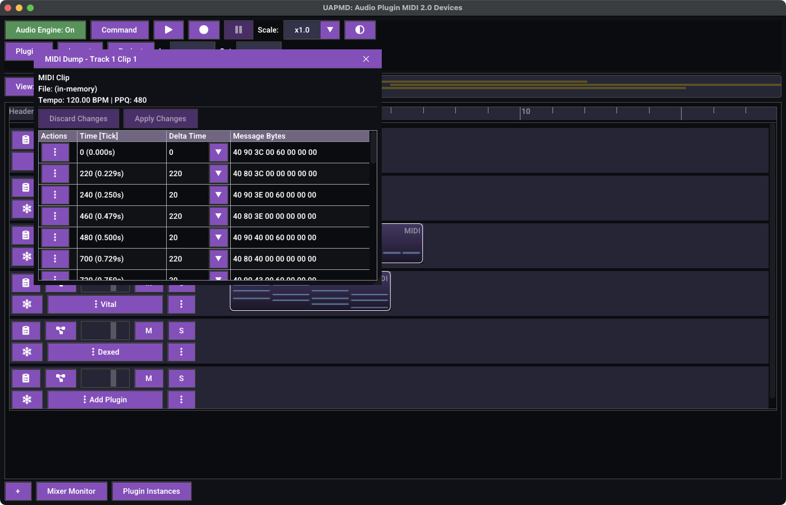
The dump list is the raw view of the same clip: one row per UMP, with
its tick position, its absolute time, its delta from the previous event,
and its message bytes. The example above shows MIDI 2.0 note-ons and
note-offs (40 90 3C 00 60 00 00 00 is a note-on for note
60).
Edits here are staged, not applied immediately -- change what you
need, then Apply Changes, or Discard
Changes to reload the clip as it stands. The ⋮
button on each row inserts an event before it or deletes it.
Audio events
For audio clips, Edit Audio Events opens an editor
for the clip's markers and warps.
Markers name a position in the clip; warps map a position in the clip to
a position on the timeline. Both are edited as lists, with
Add Marker / Add Warp, and applied with
Apply.
Plugins
Finding and loading plugins
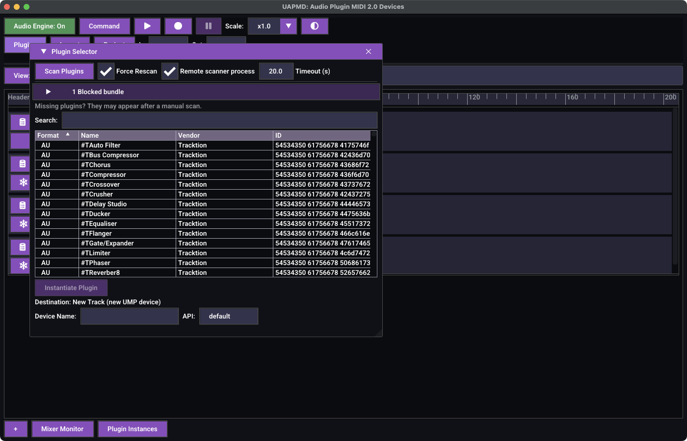
The Plugins button opens the Plugin Selector. UAPMD
always performs a fast scan at startup, which discovers plugins
without instantiating them -- this covers CLAP, LV2, AUv2, AUv3, and
those VST3 bundles that ship a moduleinfo.json.
Everything else needs a real scan, which is what Scan
Plugins does. Two checkboxes control it: Force
Rescan discards the cached results, and Remote scanner
process runs the scan in a separate process on desktop, so that
a plugin which crashes on load cannot take the app down with it.
Timeout (s) bounds how long a single bundle may take.
Bundles that failed are collected under Blocked
bundles, which expands to list them and offers
Clear blocklist, Show scan report,
Copy as Markdown, and a table preview.
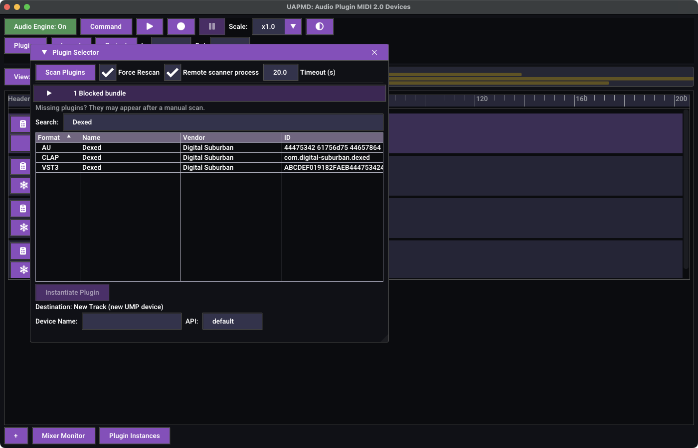
Search: filters the table, which sorts by format, name,
vendor, or ID. Select a row and press Instantiate
Plugin.
Destination below the button says where the plugin
will go. It reads New Track (new UMP device) by default;
opening the selector from a track's Add Plugin entry
instead targets that track, and from the master track's entry it targets
the master track. When a new track is created you can give its virtual
UMP device a name and pick the MIDI API to expose it on.
The plugin menu on a track
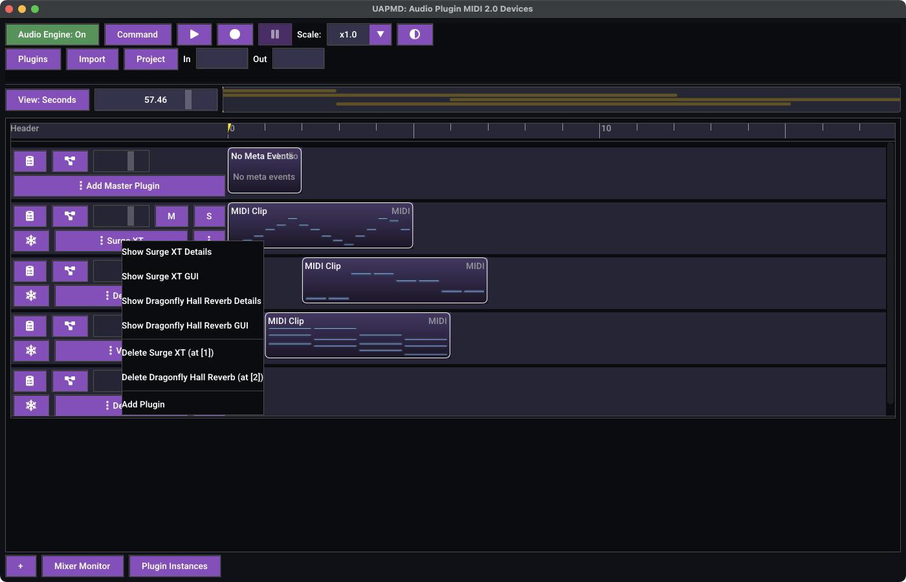
The plugin button in a track legend lists every plugin instance on that track, each with:
- Show / Hide
<name>Details -- the instance details window. - Show / Hide
<name>GUI -- the plugin's own editor. Disabled when the plugin has no GUI. - Delete
<name>(at [n]) --nis the plugin's position in the chain.
Add Plugin at the bottom opens the Plugin Selector targeting this track, appending to the chain.
Instance details
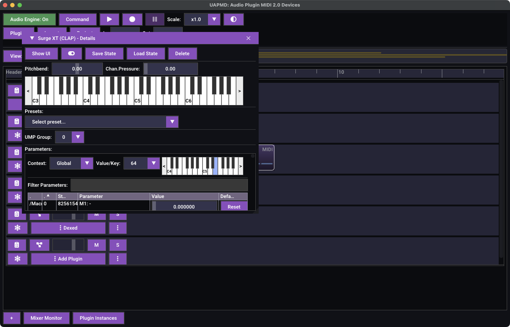
The details window is a playground for one plugin instance:
- Show UI opens the plugin's own editor, and the toggle next to it bypasses the instance.
- Save State / Load State write and read the plugin's own state.
- Delete removes the instance from the track.
- Pitchbend and Chan.Pressure sliders, and a MIDI keyboard you can click to audition the plugin.
- Presets lists the presets the plugin reports; selecting one loads it.
- UMP Group picks which UMP group of the track's virtual MIDI device drives this instance. Groups already in use are disabled.
- Parameters lists every parameter with its current
and default value and a
Resetbutton.ContextandValue/Keynarrow the list to per-note or per-key parameters where the plugin supports them, andFilter Parametersis a text filter over the names.
The plugin GUI
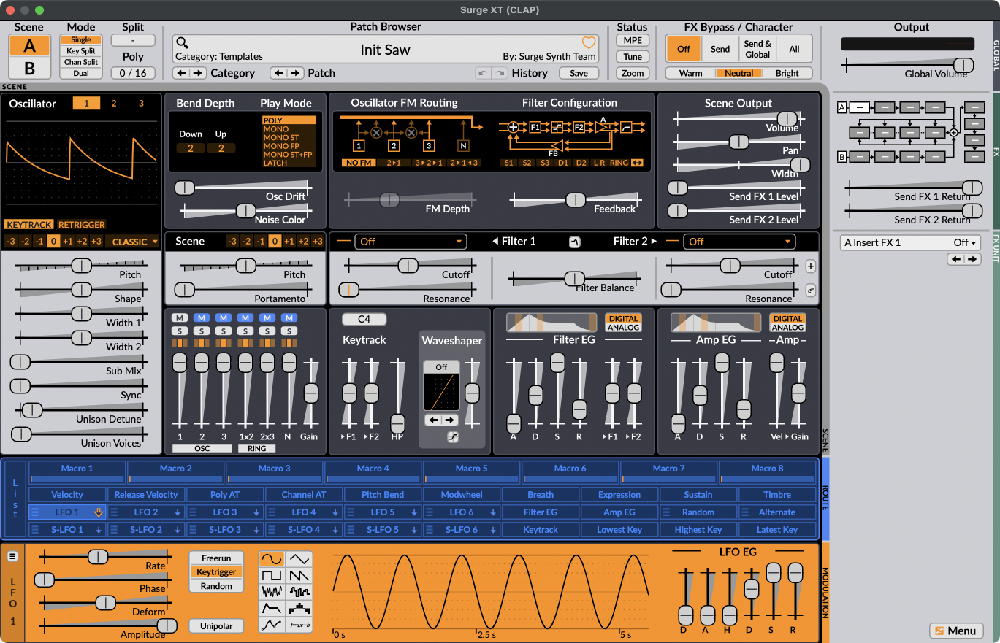
Plugin editors open as dedicated native windows, sized to whatever the plugin asks for and resized along with it when the plugin requests a new size.
The track graph editor
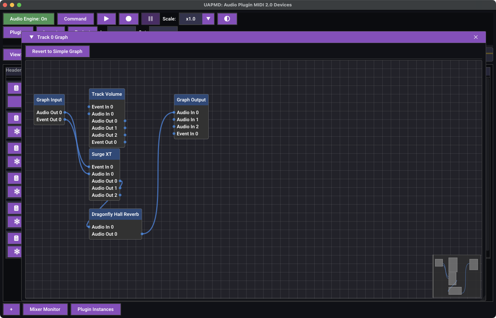
The graph icon in a track legend opens that track's audio graph. Nodes are the graph input, the built-in track volume node, each plugin instance, and the graph output; edges are audio and event connections. Ports are listed per node, so a plugin's channel layout is visible directly.
A track starts as a simple chain, and editing the connections turns it into a general DAG. Revert to Simple Graph puts it back to a plain chain. A minimap in the corner helps when the graph outgrows the window.
Plugin instances
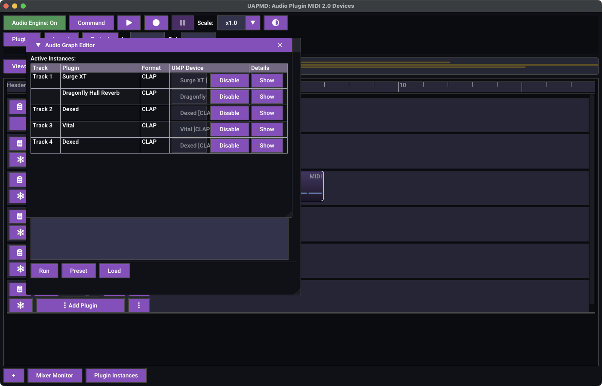
Plugin Instances in the footer opens a flat list of
every plugin instance in the project, grouped by track, showing the
format and the virtual UMP device each is exposed as.
Disable bypasses an instance and Show opens
its details window.
Note that this window lists plugin instances, not tracks -- one track with two plugins appears as two rows.
The mixer monitor
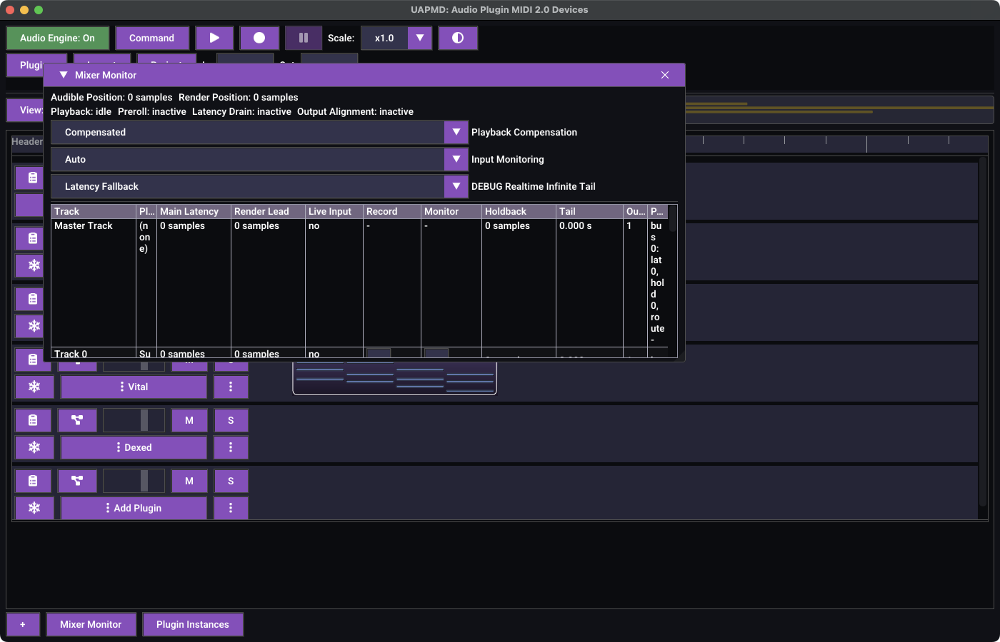
The Mixer Monitor reports latency compensation. The header shows the
audible and render positions and the current playback phase; below it,
Playback Compensation and Input Monitoring
select the compensation strategy, and the table breaks down each track's
reported latency, render lead, holdback, tail, and routing.
Projects and rendering
A project saves the tracks, their audio and MIDI 2.0 clips, and the
plugin graphs with their state. Save Project and
Load Project live in the Project menu,
along with New Project, which resets to the launch
state after prompting about unsaved changes.
Rendering to a file
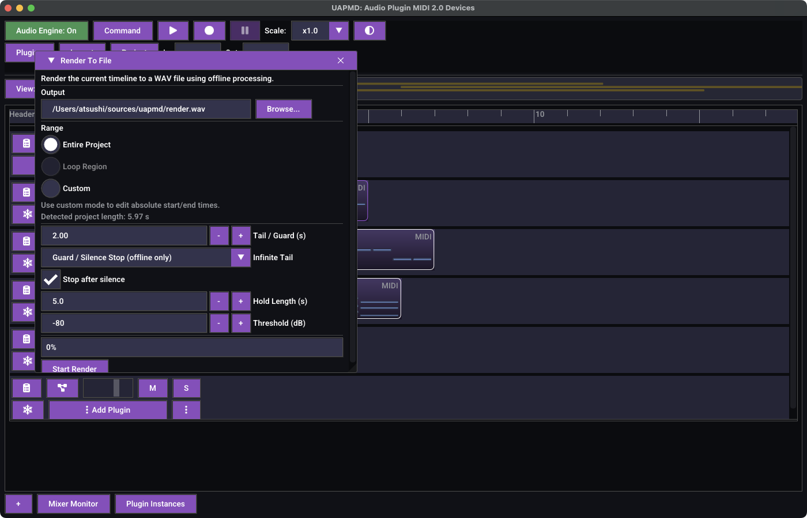
Render To File renders the timeline to a WAV file using offline processing -- faster than real time, and independent of the audio device.
- Output is the target path;
Browse...opens a file dialog. - Range is
Entire Project,Loop Region, orCustom. The detected project length is shown underneath, andCustomlets you type absolute start and end times. - Tail / Guard (s) extends the render past the end of the material, so reverb tails are not cut off.
- Infinite Tail decides what to do with plugins that never fall silent.
- Stop after silence, with Hold Length (s) and Threshold (dB), ends the render once the output has stayed below the threshold for that long.
A progress bar sits above Start Render, which becomes a stop button while a render runs.
Settings
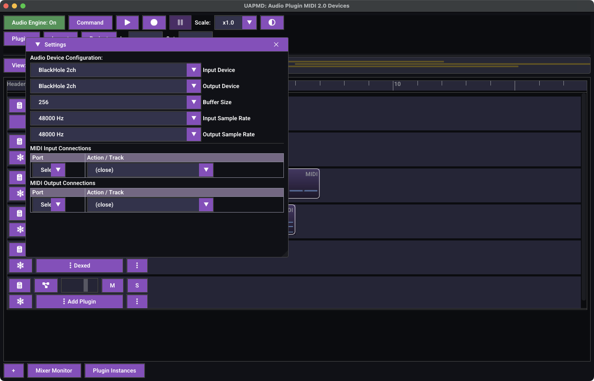
Command -> Show Device Settings opens
audio and MIDI configuration:
- Input Device and Output Device, with their Sample Rate selectors.
- Buffer Size, or
Use Platform Buffer Sizeto let the platform decide. - MIDI Input Connections and MIDI Output Connections -- each row binds a platform MIDI port to a track, so you can play a track from external hardware or send its output out.
Changing the audio device restarts the engine, which reactivates every loaded plugin.
Addins
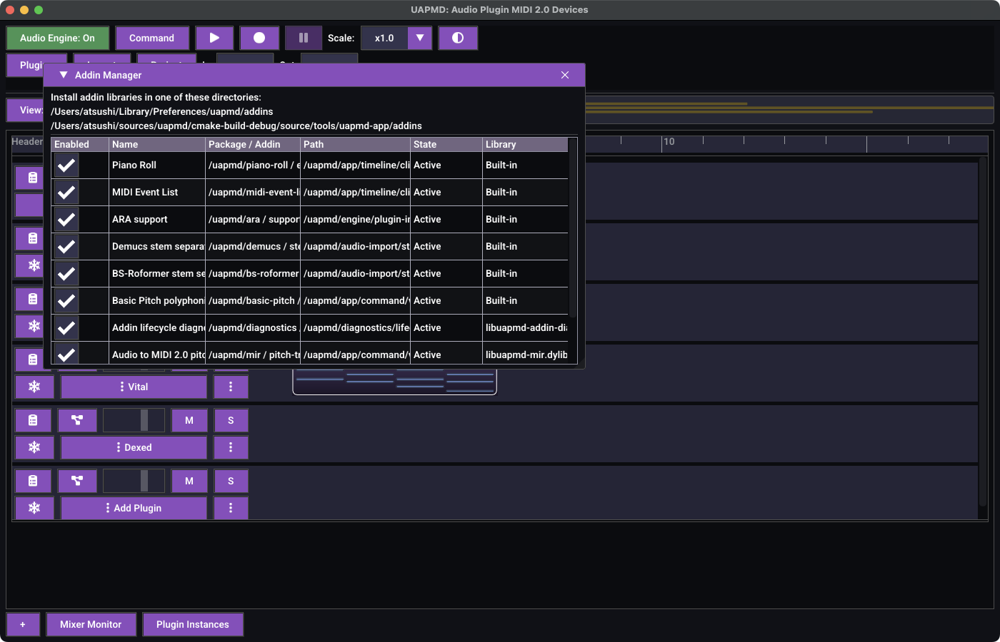
Several features are addins rather than built-in code, and the Addin Manager lists them all with their package ID, the extension point they implement, their state, and the library they come from. The checkbox in the first column enables or disables each one.
Addins ship built-in (the piano roll, the MIDI event list, ARA support, the Demucs and BS-Roformer stem separators, Basic Pitch), or come from a shared library placed in one of the directories named at the top of the window.
Disabling an addin removes what it contributes -- turn off both stem
separators, for example, and Import Split Audio Tracks
disappears from the Import menu.
Automating the app
Everything the UI does is also reachable programmatically, which is how UAPMD is meant to be driven for anything repetitive.
The script editor
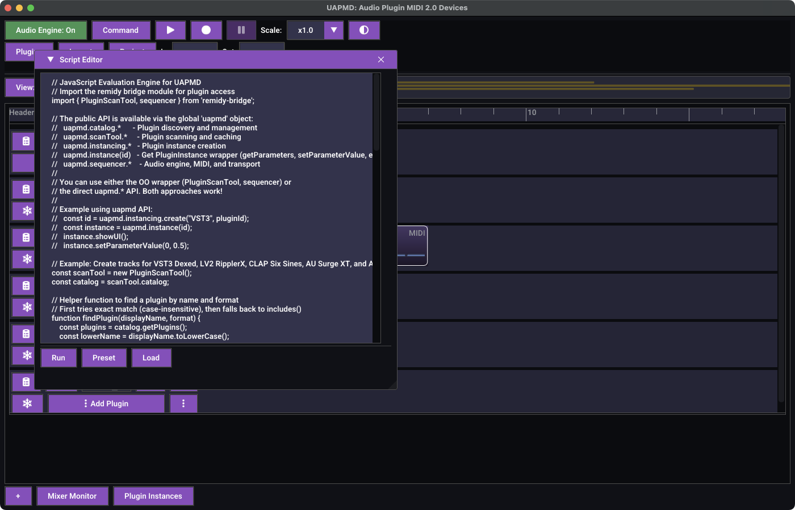
Command -> Show Script opens a
JavaScript editor with Run and Load, plus
Preset with the bundled Demo,
PluginState, and TestDAG scripts. The demo
script documents the API:
| Object | Covers |
|---|---|
uapmd.catalog.* |
Plugin discovery and management |
uapmd.scanTool.* |
Plugin scanning and caching |
uapmd.instancing.* |
Plugin instance creation |
uapmd.instance(id) |
A plugin instance -- getParameters,
setParameterValue, showUI |
uapmd.sequencer.* |
Audio engine, MIDI, and transport |
There is also an object-oriented wrapper
(PluginScanTool, sequencer) imported from
remidy-bridge; both styles work.
MCP
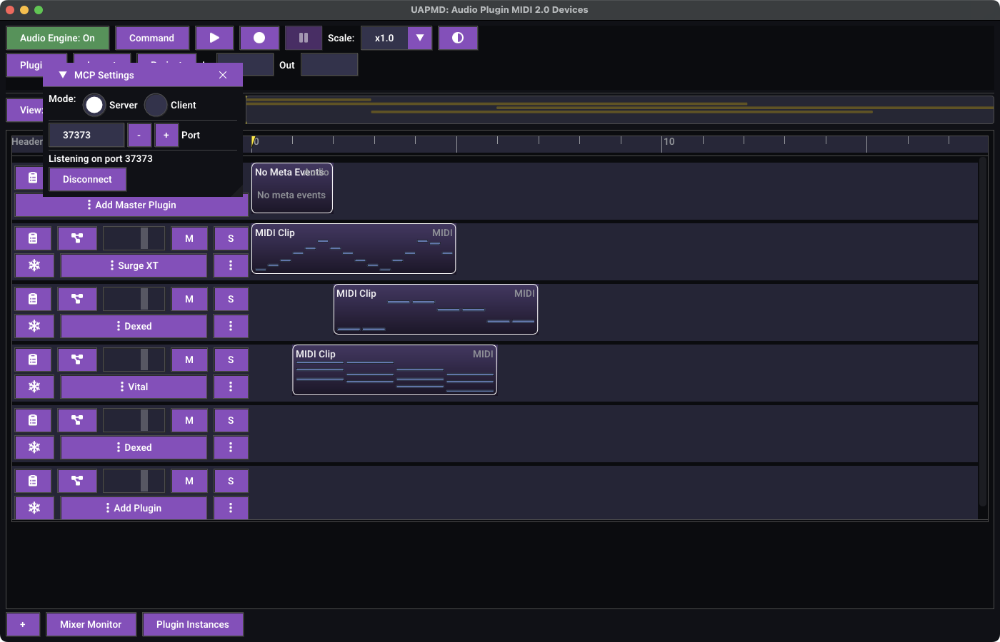
Command -> Show MCP Settings exposes the
app as an MCP server, so an agent can inspect and edit the project.
- Server mode listens on a port on
127.0.0.1-- desktop only. - Client mode connects out to a relay over WebSocket, with an optional auto-reconnect. This is the default on platforms without an embedded HTTP server.
Press Connect to start and
Disconnect to stop; the status line above the button
reports what it is doing. Launching with
--mcp-server [port] starts server mode without visiting
this window.
The tool surface covers tracks (list_tracks,
create_track, add_plugin_to_track), clips
(list_clips, add_midi_clip,
create_empty_midi_clip, add_ump_event,
remove_ump_event), transport (play,
stop, jump, set_tempo), the graph
(connect_track_graph, ensure_dag_track_graph,
revert_track_graph_to_simple), history (undo,
redo, begin_compound,
end_compound), projects (save_project,
load_project), presets, freezing, latency compensation
state, and run_script for the JavaScript API above.
On the Web build MCP is always active as a JavaScript export instead,
called through Module.ccall('uapmd_mcp_call', ...), with
Module.ccall('uapmd_eval', ...) for scripts.